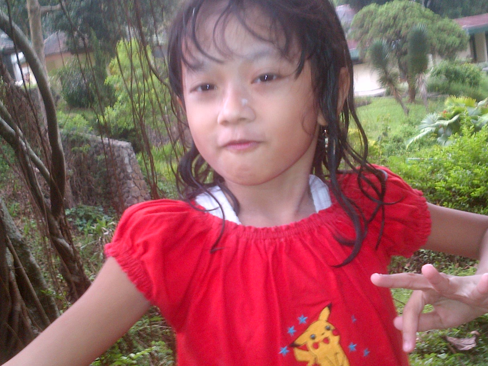

Pelajar SMK yang fokus mendalami Cloud Computing dan DevOps, dengan dasar administrasi jaringan, Linux, dan virtualisasi.

Terbiasa bekerja teliti dan disiplin, mampu berkolaborasi dalam tim maupun bekerja mandiri. Saat ini aktif membangun pengalaman langsung di dunia frontend development sambil terus memperdalam cloud infrastructure.
01
Menekuni cloud infrastructure sejak bangku SMK, dibangun lewat kebiasaan kerja yang rapi dan konsisten.
Tyara adalah pelajar SMK dengan minat besar di bidang Cloud Computing dan DevOps. Ia memiliki pengetahuan dasar administrasi jaringan, Linux, dan virtualisasi, serta terbiasa bekerja teliti dan disiplin dalam setiap tugas yang dikerjakan.
Di luar sisi teknis, Tyara juga membawa latar belakang sebagai frontend developer dan ilustrator digital — dua pengalaman yang melatih ketelitian, manajemen waktu, dan konsistensi kerja jangka panjang, nilai yang juga penting dalam pekerjaan cloud engineering.
Fokus utama
Cloud Computing & DevOps
Domisili
Tanggulangin, Sidoarjo
Latar belakang
Sistem Informasi Jaringan Aplikasi
Status
Lulusan SMK Telkom Sidoarjo, 2026
Keahlian & Fokus Kerja
Pengalaman
Frontend Developer
Skomda
Bertanggung jawab mengembangkan website responsif menggunakan PHP, HTML, dan CSS. Berkolaborasi dengan tim untuk implementasi UI/UX yang user-friendly, mengoptimalkan performa website, memastikan kompatibilitas cross-browser, serta mengelola version control menggunakan Git dan GitHub — praktik dasar yang sama dipakai dalam workflow DevOps dan deployment aplikasi cloud.
Ilustrator & Artist
Media Sosial
Aktif membagikan karya ilustrasi digital di berbagai platform media sosial dan mengembangkan gaya visual yang konsisten. Pengalaman ini melatih ketelitian, manajemen waktu, dan kemampuan bekerja mandiri secara konsisten dalam jangka panjang.
Pendidikan
SMK Telkom Sidoarjo
Sistem Informasi Jaringan Aplikasi